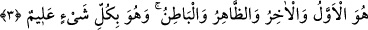

3. O evveldir, âhirdir, zâhirdir, bâtındır. O, her şeyi bilendir.
“O, evveldir,” Zât ve sıfatı itibariyle diğer varlıklardan öncedir. Çünkü O, diğer
varlıkları yoktan var edicisi ve ilkidir. Önce ve ilk olmaktan maksad, zât itibariyle olup
zaman itibariyle değildir. Zira zaman da yine sonradan olan varlıklar cümlesindendir.
“Âhirdir,” varlıklar yok olduktan sonra hakîkaten var ve bâkî olan O’dur. Şöyle de
denilebilir: Kendisinden başka varlıklara nazar edilmeden sadece O’nun zâtıdır. Zîra
mümkün olan bütün varlıklar var oluş sebepleri dikkate alınmazsa fânîdirler.
O başlangıcı olmayan evveldir; âhiri bulunmayan âhirdir O
Nasıl meydana gelir varlık ve yokluk yüksek ve alçak O yüce varlık olmadan
“Zâhirdir,” çokluğun bulunması O’nun açık delilleridir. “Bâtındır.” Gerçekten
gizlidir, akıl onu idrak etmenin çevresine bile yaklaşamaz. Allah’ı Allah’tan başka hiç
kimse bilemez. Bu gizlilik dünyâda da âhirette de birdir. Ancak Zemahşerî’nin Keşşaf
adlı tefsîrinde yer alan “Bu âyet Allah âhirette duyularla idrak edilebilir, diyenlerin
aleyhine delildir” görüşü geçersizdir. Çünkü Allah Teâlâ’nın gerçek künhü ile bâtın
oluşu, sıfatları itibariyle âhirette görülmesine aykırı ve engel değildir.
“O, her şeyi bilendir.” Gizli ve âşikâr hiç bir şey O’nun ilminin dışında kalamaz.
Alîm mübalağa ismi fâil kalıbı olduğu için Allah Teâlâ’nın her şeyin gizlisini ve açığını
noksansız ve tam olarak bildiğini göstermektedir.
Bu âyet-i kerîmenin başka tefsirleri de vardır: O, ilktir, sebepler O’ndan başlar. O,
sondur, neticeler O’nda son bulur. Yâni birbirinden oluşan varlıklar zincirine baktığın
zaman Allah Teâlâ’yı bu varlıklar zincirinin başlangıcı ve sonu olarak görürsün.
Sebepler zinciri O’nda başlar, sonuçlar zinciri O’nda biter. Bu sebeple âlimler şöyle
demişlerdir: Geminin rotasına girip de yürümesi husûsunda rüzgâra güvenme! Bu
fiillerin tevhîdi bakımından şirktir ve âlemdeki işlerin hakîkatleri bakımından bunlara
imkân sağlayan Allah hakkında cehâlettir. Âlemin mahiyetini olduğu gibi gören kimse
bilir ki, rüzgar kendi kendine hareket etmez. Aksine ilk ve başka hareket ettiricisi
bulunmayan bir hareket ettiricisi vardır. O, bir hareket ettirici sâyesinde harekete
geçmekten ve diğer varlıklar gibi görünür olmaktan münezzehtir. O, aynı zamanda
zâhirdir, yâni her şeye galiptir. Bâtındır, her şeyin iç yüzünü bilir. Arapça’da zâhir, bir
şey açığa çıktığı zaman onu bilip hâkim olunduğunda, bâtın ise gizli kalan bir şey
öğrenildiğinde kullanılır. Ancak Zemahşeri bu görüşü bu hâliyle zâhir ile bâtın
arasındaki mutabakata aykırı bulduğu için uygun bulmamıştır.
Ebû Hüreyre (r.a.) den rivâyet edildiğine göre, Peygamberimiz’in (s.a.) kızı Hz.
Fâtıma (r.a.) Rasûlullah’ın huzuruna girerek bir hizmetçi verilmesini istedi. Rasûlullah
(s.a.) Hz. Fâtıma’ya (r.a.) şöyle buyurdu: “Sana bundan senin için daha hayırlı olanı